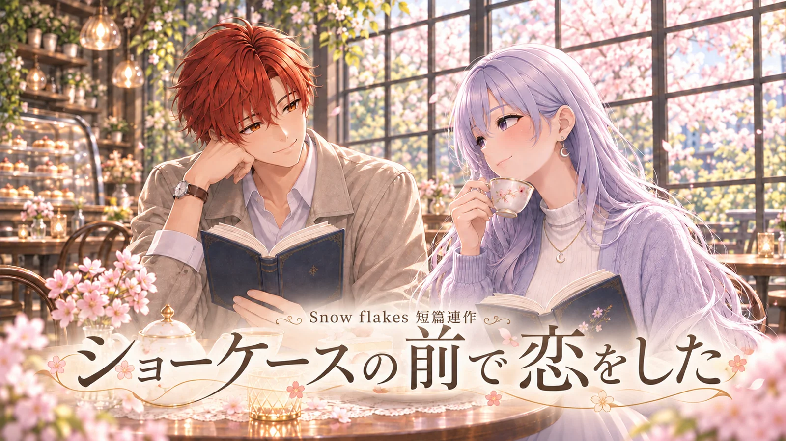
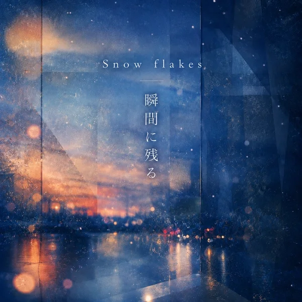

作品紹介
Snow flakes「ショーケース編」で描かれなかった、コウタと宵子の物語。
本を選び、花を眺め、帰り道にもう少しだけと足を止める。
次に会えるのが楽しみだった二人の、ささやかな日々を綴る短篇連作です。
Instagram 特別短篇
「一枚、撮りませんか」
各話一覧
特別編一枚、撮りませんかInstagram 特別短篇Instagram で読む毎日20時に1話ずつ公開します。
テーマ曲

テーマ曲
『花の名前を忘れても』
楽曲ページへ →
シーンギャラリー
Instagram 特別短篇「一枚、撮りませんか」
画像をタップすると拡大します。